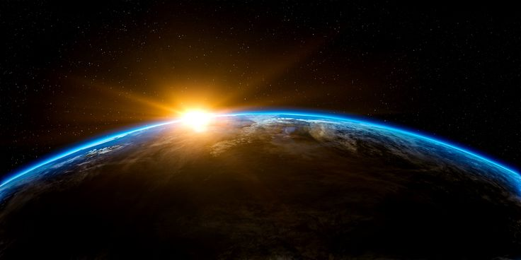

Bumi adalah planet ketiga dari Matahari dan satu-satunya planet yang diketahui mendukung kehidupan. Dengan diameter sekitar 12.742 kilometer, Bumi adalah planet terbesar kelima di tata surya. Bumi memiliki atmosfer yang terdiri dari nitrogen (78%), oksigen (21%), dan gas-gas lainnya yang menjaga suhu permukaan tetap stabil, melindungi dari radiasi berbahaya, dan memungkinkan makhluk hidup untuk bernapas. Bumi memiliki permukaan yang beragam, termasuk daratan, lautan, gunung, gurun, dan hutan. Sekitar 71% permukaan Bumi ditutupi oleh air, sebagian besar berupa lautan. Hal inilah yang membuat Bumi sering disebut sebagai "Planet Biru". Gravitasi Bumi, yang dihasilkan oleh massanya, menjaga atmosfer tetap utuh dan mengatur orbit Bulan, satelit alami Bumi.
Fakta menarik tentang Bumi adalah bahwa planet ini memiliki medan magnet yang dihasilkan oleh inti logam cairnya. Medan magnet ini, yang dikenal sebagai magnetosfer, melindungi Bumi dari angin matahari yang berbahaya. Selain itu, rotasi Bumi menyebabkan fenomena siang dan malam, sementara kemiringan sumbunya menghasilkan pergantian musim sepanjang tahun. Bumi juga memiliki ekosistem yang sangat kompleks dan beragam, mulai dari mikroorganisme kecil hingga mamalia besar. Siklus air, siklus karbon, dan berbagai proses biologis lainnya mendukung keseimbangan lingkungan yang memungkinkan kehidupan terus berkembang.
Untuk informasi lebih lengkap tentang bumi silahkan kunjungi Wikipedia